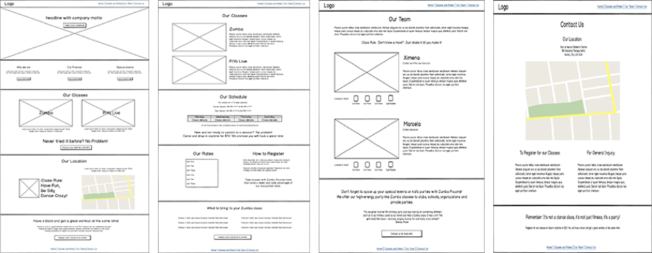
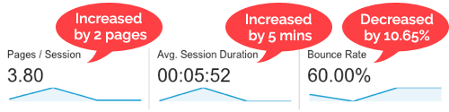

The Client was not happy with their existing website because it did not reflect the look and feel of the company and was not generating new business. On top of that, their customers told them that the website was less information and appeared to be missing vital information. My challenge was to create a new website that would be intuitive, fresh, and more informative.
Top insights:
To answer this question I started by analyzing the web analytics data. My analysis revealed that new visitors were able to find the website but they were not staying long. The website had a high bounce rate and low engagement metrics.
Traffic sources, search keywords, and landing page reports provided insight into the kind of information visitors were looking for and helped to identify the website's content gaps.
Mobile reports showed that almost half of users were viewing the site using a mobile device. Being that the site was not responsive and did not render correctly on small screens, this was a significant usability problem.
It was very important for the new website to communicate the right atmosphere. My clients know that when it comes to logistics, motivation and a positive attitude are essential. I created a mood board and personas to represent these values before continuing with the site design. These deliverables help to keep the end-user at the forefront of the design process.
My goal for the moodboard was to stay true to the COGOS brand while capturing the company motto:
It's not only logistics, It's a technology company!
My goal for each persona was to combine the qualitative and quantitative data from the web analytics reports and user testing sessions into a representative ‘typical’ user.
I created low-fidelity wireframes to map out the new website's structure and page layouts. These were great for communicating the design vision and getting early feedback. The wireframes went through a couple rounds of iteration as final content was developed.
I believe it is important to continually test your design throughout the creation
process. In this case I wanted to make sure I was on the right track before completing my high-fidelity
mockups. My approach was to create a mock-up of the homepage first and then test it with recruited users.
Using usabilityhub.com I created a mood test that showed participants my design and asked them:
“How does this page make you feel? Please list your top three emotions."
The majority of responses was positive and captured the desired mood perfectly. However, there were some negative responses such as “overwhelmed” and “busy”.
Based on these results, I modified the design by reducing the amount of colour, increasing whitespace and improving the text readability.
Decreased bounce rate and improved site engagement:
The unmoderated usability tests I initially conducted were run again with the new website. Feedback this time was much more positive!
If you like what you see and want to chat please contact me!
+91 00000000
Bengalore, India